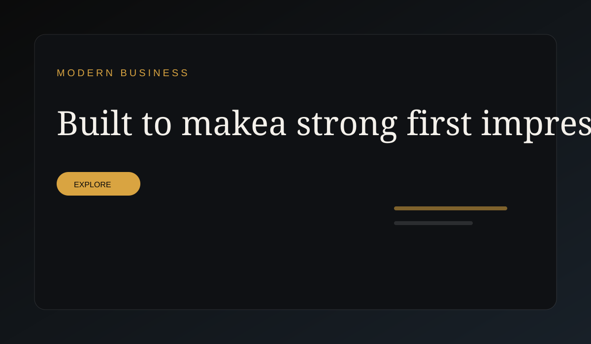
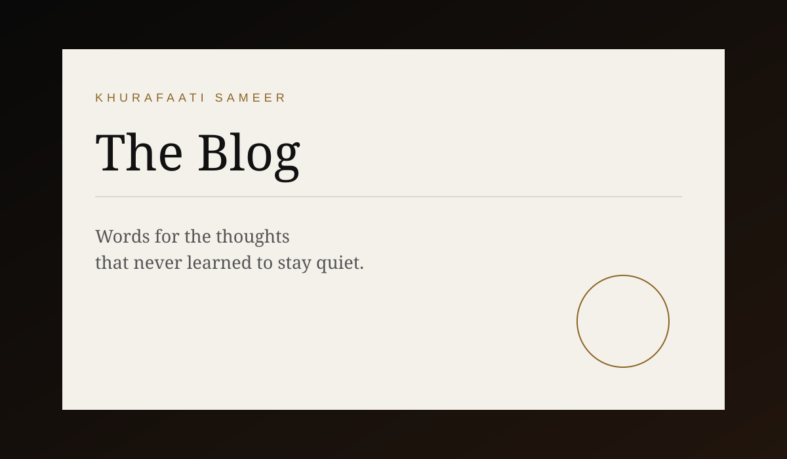

Web / Portfolio01
Khurafaati Sameer — Personal Portfolio
A cinematic personal-brand website combining storytelling, writing, digital creativity and professional identity.
Open portfolio →A growing collection of web experiments, creative work, writing, music and digital projects. Some are personal/demo projects; they are presented here as part of my creative portfolio.
A cinematic personal-brand website combining storytelling, writing, digital creativity and professional identity.
Open portfolio →
A responsive business-style landing page built as a personal/demo project to showcase frontend and visual design skills.
View case study →
The publishing space is now integrated into this GitHub Pages website.
Open blog →
A long-form storytelling project built around emotions, memory, relationships and the cinematic side of written words.

An AI-assisted protest song. AI is the creative medium; the song, voice, feeling and message are the work.
Short-form visual storytelling where an emotion, thought or moment becomes a frame-by-frame story.
Watch channel →